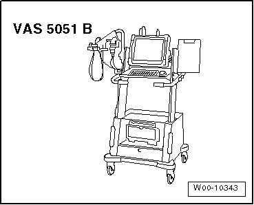
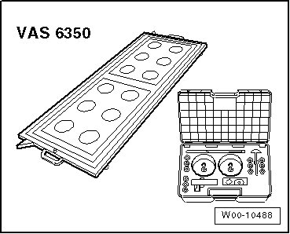
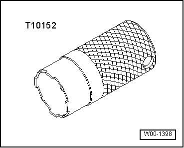
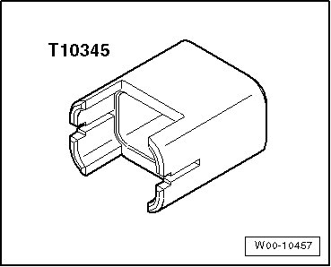

Lamps, Switches - Exterior
Special Tools
Special tools, testers and auxiliary items required
• Vehicle Diagnostic, Testing and Information System with diagnostic cable (VAS 5051/5 A)

• Calibration Device (VAS 6350)

• Torque Wrench (V.A.G 1331/)

• Wrench (T10152)

• Release lever (T10039)
• Wedge (T10039/1)

• Release tool (T10345)

Special Tools
Special tools, testers and auxiliary items required
• Protective eyewear
• Gloves